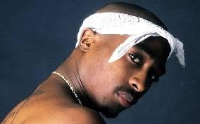
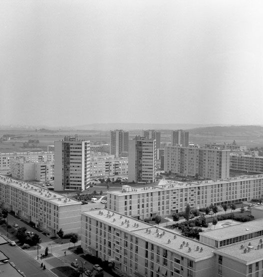

Le rap est un mouvement culturel et musical prenant ses racines du hip-hop, ayant émergé au début des années 1970 dans les ghettos aux États-Unis. Le rap se caractérise par sa diction très rythmée et en rimes, le plus souvent une succession de couplets séparés par des refrains. (source wikipédia)
Tupac Shakur
1.Le rap conscient:Le rap conscient français a une approche constructive lorsqu’il aborde diverses problématiques sociétales. Pragmatique, il dénonce des faits, mais toujours dans une optique de délivrer un message positif (ex : I AM).
2.Le rap hardcore:Le rap hardcore français rejette la société dans son ensemble, ses normes, sa politique, ses codes avec force et violence. Il met l’accent sur son quotidien (violence des rues, la pauvreté), effet du système (ex : Lunatic).
3.Le rap commercial:Le rap commercial français a pour objet de valoriser ce style musical au grand public en insistant sur les clichés, sur ce que le public veut entendre dans un format correspondant au besoin de l’auditeur (ex : Maître Gims).
4.La drill: La drill est caractérisée par un contenu lyrique violent, morbide, sombre et un rythme orienté trap. Popularisée localement à Chicago, la drill se fait connaître à l'échelle nationale vers 2012 grâce à des rappeurs tels que Lil Durk, Fredo Santana, SD, Lil Reese, Soulja Boy, Chief Keef.La drill est entrain de conquérir plusieurs rappeurs français font de la drill notamment: Freeze corleone,Gazo,1pliké140,Ashe22.(source)
Drill en France:
Et drill a Londre:
En france le rap est très écouter de nombreuse personnes s'y met il y a beaucoup de talent dans certaine cités de france notamment dans le quartier place 2 france à Massy rester brancher Massy Place 2 France vous allez nous entendre de partout (CRIQUET LAND)
